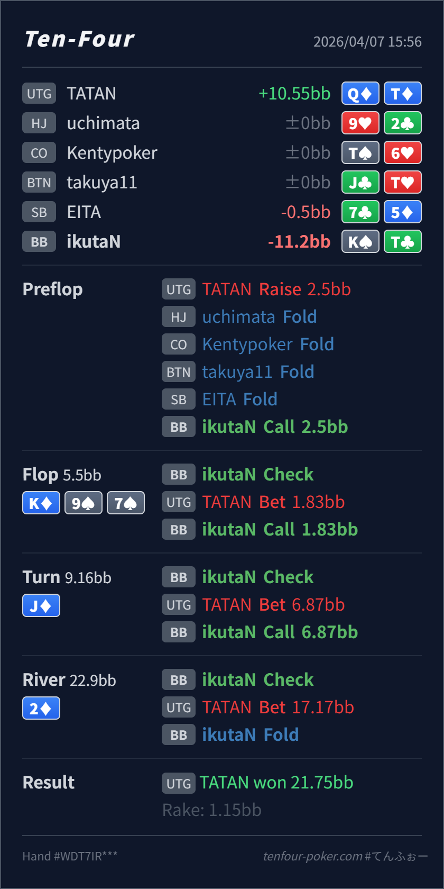

Preflop
やや広いK♠T♣ は完全な事故ではないものの、UTG に対しては close です。
主論点は、UTG open に対する BB の K♠T♣ defend をどこまで採るかと、top pair を持ったあとに 3bar へどう対応するかです。当時の思考メモはないので、「top pair だし turn で draw もついたから river までかなり悩んだ」という仮定で見ます。結論は、flop / turn の continue は自然で、いちばん見直す価値があるのは preflop の入口を少し締めることです。river fold はかなり良いです。
K♠T♣Q♦T♦K♦ 9♠ 7♣ / J♦ / 2♦KTo defend がやや広いことです。postflop はおおむね自然です。K♠T♣ は BB vs UTG 2.5BB open では close な部類で、相手がタイト寄りなら fold baseline に寄せやすいです。2♦ の 75%pot は no-diamond の KTo なら素直に fold で大丈夫です。K♠T♣Q♦T♦2.5BB, BB callK♦ 9♠ 7♣ / J♦ / 2♦1.83BB, BB call6.87BB, BB call17.17BB, BB foldQ♦T♦ turned straight → river flush
やや広いK♠T♣ は完全な事故ではないものの、UTG に対しては close です。
K♦ 9♠ 7♣良い
弱い kicker でも pair を作れていて、size も小さいので continue は自然です。
J♦良い6.87BB と大きく打たれても、pair + draw で十分受けられます。diamond がない点だけ river の注意点です。
2♦良い fold
Hero は no-diamond の KTo で、bluff を強く捕まえる blocker もありません。
| 論点 | その場で起きがちな見え方 | どこがズレたか | 次回の基準 |
|---|---|---|---|
preflop の K♠T♣ defend | BB で pot odds も良く、Kx ならとりあえず defend したくなる | UTG open はかなり強く、offsuit の KTo は dominated な Kx を多く踏みます。postflop で top pair を作っても river の bluff-catch が重くなりやすいです。 | 早い位置 open には suited / connected / Ax を優先し、offsuit KTo は fold 寄りを baseline にする |
| river の bluff-catch | top pair を持っているので、17.17BB でも 1回くらい受けたくなる | K♦ 9♠ 7♣ J♦ 2♦ で UTG が大きく 3bar する range はかなり value 寄りです。こちらは diamond を持たず、T が一部 QT bluff を減らすので、call の質が上がりません。 | flush 完成 river の large bet には、Kx♦ やより強い Kx を優先し、no-diamond の弱め top pair は fold で整理する |
| ストリート | その時点の見え方 | 判断の軸 | 評価 | コメント |
|---|---|---|---|---|
| Preflop | UTG range は AQ+, TT+, suited broadway を中心にかなり強い塊です。BB は pot odds で広く defend できますが、offsuit broadway は dominated が増えます。 | K♠T♣ は完全な事故ではないものの、UTG に対しては close です。 | やや広い | 特に相手が素直な UTG なら fold baseline で問題ありません。 |
Flop K♦ 9♠ 7♣ | Hero は top pair を持ち、UTG の 1/3pot c-bet に対してかなり戦えます。 | 弱い kicker でも pair を作れていて、size も小さいので continue は自然です。 | 良い | ここは素直に call で大丈夫です。 |
Turn J♦ | Hero は top pair に加えて Q と 8 の double-gutter を拾い、かなり強くなります。 | 6.87BB と大きく打たれても、pair + draw で十分受けられます。diamond がない点だけ river の注意点です。 | 良い | この call は問題ありません。見直し点はこの street ではなく preflop 側です。 |
River 2♦ | 3枚目の diamond が落ち、UTG の value range は flush / straight / set / 一部 AK に寄ります。 | Hero は no-diamond の KTo で、bluff を強く捕まえる blocker もありません。 | 良い fold | 17.17BB の large bet に対して hero-call する必要は薄いです。かなり落ち着いた fold です。 |
Kx から先に削ると postflop がかなり楽になります。自分が何の bluff を消していて、何の value に踏まれているか を先に数えるとぶれにくいです。Kx no-diamond の hero-call を減らすのは実戦でもかなり有効です。